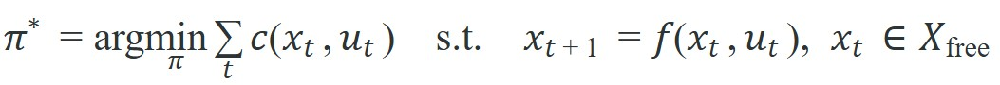

Navigation intelligence is measured in executed motion, recovery behavior, and auditable uncertainty.
A Local Planner With Commitment Issues
A hospital delivery robot reaches an intersection, detects a person stepping into its corridor, and must decide in 50 milliseconds: wait, reroute, or back up. That split-second is exactly where navigation stops being a geometry problem and becomes an embodied intelligence problem. Modern robots carry maps, fast processors, and learned models, yet most real-world failures happen at this moment of commitment under uncertainty. This section builds the formal loop that makes the decision auditable: state estimate, costmap, global route, local controller, and recovery trigger. You will implement a scored diagnostic that makes execution risk visible before you touch a full navigation stack.
This section assumes familiarity with localization uncertainty from section 29.3 and with behavior trees from section 3.4, both of which the navigation loop calls at runtime. The planning formulation introduced here is extended in section 30.2 (graph search), section 30.3 (sampling-based planners), and section 30.4 (local trajectory control). The full stack, including LLM-based goal interpretation, reappears in section 33.1 as part of the language-grounded planning discussion in Part VII.
Navigation is where the agent's world model becomes a physical commitment. A route that ignores localization uncertainty, moving people, controller limits, or recovery policy is not a plan; it is a wish drawn on a map.
A navigation stack has layers: global route, local trajectory, costmap, controller, safety monitor, and recovery behavior. Each layer can be correct locally and still fail globally if the interfaces are underspecified. A path that cannot be executed is not a plan; it is a geometry exercise with no robot at the end. The diagram below shows how these layers connect into a single closed loop, with the recovery branch that catches an infeasible command before the robot fails silently.
The costmap exists because a physical robot cannot treat space as binary. Any obstacle within the robot's footprint causes a collision, but the robot also cannot hug walls at zero clearance. Wheel slip, localization error, and sensor lag all eat into the margin. A costmap assigns a numeric penalty to every cell in the grid. The penalty rises steeply near obstacles and falls to zero in open space. Without this gradient, planners route through theoretically free corridors that a real robot with a 40 cm body and 5 cm localization noise will clip. The costmap translates physical size and uncertainty into a scalar the optimizer can reason about. A robot with a 40 cm body and 5 cm localization noise needs at least a 45 cm inflation radius just to break even: without that margin, a corridor that looks 50 cm wide on the map is actually a guaranteed collision on hardware.
Mechanically, the costmap fuses two grids updated at different rates. The static layer loads the pre-built occupancy map and inflates each known obstacle by the configured radius. The obstacle layer subscribes to live sensor topics (LiDAR, depth camera), marks a cell occupied when a reading lands in it, and decays that mark if no reading reinforces it within a timeout. The planner queries combined cell cost once at planning time; the local controller re-queries only its short horizon each control cycle. That gap is why a stale static layer stays invisible to the controller until the robot is already close.
So far: the costmap turns physical footprint and localization noise into a per-cell penalty (the inflation radius), and it is really two grids, a slow-updating static layer and a fast-updating live obstacle layer, fused into the single cost value each solver queries.
A common assumption is that navigation becomes "intelligent" simply by using a better search algorithm, such as replacing Breadth-First Search (BFS) with A* or adding a learned heuristic. This is wrong in the embodied AI context because the bottleneck is never the geometric path quality; it is the robot's ability to execute the path under localization noise, physical dynamics, and real-time sensor updates that no offline algorithm can see in advance. The correct mental model treats navigation intelligence as a closed loop: the state estimate, costmap, local controller, and recovery trigger must all agree at runtime, and a path that ignores any one of those layers is not a smarter plan, it is a plan that will fail silently at the moment of physical commitment.
The best path is the one the robot can localize, track, and recover from.
Most navigation methods can be read as constrained search or optimization:

The objective names progress to a goal; constraints name the robot reality: footprint, clearance, speed, acceleration, curvature, localization confidence, and safety monitors. Here $x_t$ is the robot's state (position, heading, and velocity at time $t$), $u_t$ is the control command applied at that step, and $X_{\mathrm{free}}$ is the set of states the costmap currently marks as safe to occupy, that is, every cell whose inflated cost is below the lethal threshold. Solving this equation once is not enough for a moving robot: the next section shows why real stacks split it into two coupled solvers that re-run at different rates.
Solving this single optimization over the whole map at the rate a moving robot demands is computationally impossible. Real stacks therefore split it into two coupled solvers. The two-layer structure matters mechanistically. The global planner solves the optimization once over the full map at coarse resolution and produces a reference path. The local controller then re-solves a much smaller version of the same problem at high frequency (typically 10-20 Hz) over a short horizon. It incorporates real-time sensor updates that the global planner never saw. A single-layer planner replanning globally at 20 Hz on a 50 m x 50 m map typically takes roughly 800 ms per cycle on typical embedded hardware (a Jetson Orin NX running A*, as of 2024); the exact figure depends on grid resolution and heuristic quality, but the order of magnitude holds across common configurations. The two-layer split typically cuts the local step to under 5 ms because the local horizon covers only the next 3-4 meters. That reduction makes real-time obstacle response physically possible. This separation of global reach from local reactivity is called the commit-and-correct principle. It is the reason modern stacks can operate safely around people.
Think of a soccer player running toward the goal: before the play starts, they commit to a general lane down the field (the global plan), then make rapid foot adjustments every fraction of a second to dodge defenders who appear in real time (the local controller). Nobody replots the entire run from scratch each time a defender moves; that would be too slow. Instead, the coarse direction is held constant while fine corrections happen at the speed of reflex. The robot stack works the same way: slow deliberate planning for the big picture, fast reactive control for the immediate few meters.
In Nav2, the local controller frequency is set via controller_server's controller_frequency parameter (default 20 Hz). If your hardware cannot sustain that rate, the controller will miss its deadline and Nav2 will silently drop cycles rather than raise an error, causing the robot to coast between commands. Set controller_frequency to a value your compute budget can guarantee, then confirm it by checking the /controller_server lifecycle state and watching the published /cmd_vel timestamp gaps in a rosbag. A gap larger than 1.5x the expected period is the first diagnostic sign of a compute-starved controller.
Code Fragment 1 isolates the navigation loop: state estimate, goal, costmap, local command, and recovery trigger. The point is to test the executed-motion contract before Nav2 (the ROS 2 navigation stack that packages a planner server, controller server, and behavior-tree navigator into one deployable pipeline) or sampling-based planners add plugins.
# Score a navigation run with execution-aware fields.
# A short path loses if it creates low clearance and many recoveries.
runs = [
{"name": "short", "meters": 12.0, "clearance": 0.18, "recoveries": 2},
{"name": "safe", "meters": 14.0, "clearance": 0.42, "recoveries": 0},
]
for run in runs:
cost = run["meters"] + 8 / run["clearance"] + 5 * run["recoveries"]
print(run["name"], round(cost, 1))Expected output interpretation. The shorter route loses by a wide margin because low clearance and two recoveries are expensive in the execution-aware score. The output should be read as a planning audit: path length alone would have selected the wrong behavior for a real robot.
Trace the Section 30.1 planning loop on a tiny run. The robot starts at cell (0,0), goal is (4,0) in a 5-cell-wide corridor with map resolution 0.25 m/cell, footprint 0.40 m, inflation radius 0.45 m, controller rate 20 Hz.
Step 1 (validate localization): reported pose covariance gives a 1-sigma position error of 0.06 m. Inflation radius is 0.45 m and 0.06 < 0.45, so localization confidence passes and the loop proceeds.
Step 2 (global plan): A* over the static costmap returns the path [(0,0), (1,0), (2,0), (3,0), (4,0)], length 4 cells x 0.25 = 1.00 m, every cell cost 0 (open corridor).
Step 3 (local command): at the first 20 Hz cycle (period 0.05 s) the controller picks v = 0.50 m/s, w = 0.0 rad/s, projecting forward 0.50 x 0.05 = 0.025 m, which stays inside the planned cell. Command published, no obstacle in the 3 m local horizon.
Step 4 (recovery trigger): at t = 0.40 s a person enters cell (3,0). The obstacle layer marks it, inflated cost at (3,0) jumps to the lethal value. The controller finds no feasible (v, w) keeping clearance above 0.45 m, so it raises the infeasible flag. The behavior tree chooses replan, A* now returns a detour through row 1, and the loop restarts at Step 2 with the fresh costmap. Nothing failed silently: the costmap layer noticed first, and the recovery is logged.
Nav2 provides the deployed pattern: planner server, controller server, behavior tree navigator, costmaps, lifecycle nodes, and recovery behaviors. Habitat and Isaac-style simulators help test policies before field deployment.
Keep the small navigation example as a regression test for interface semantics. Use Nav2, OMPL (the Open Motion Planning Library, a toolkit of sampling-based planners such as RRT and PRM), costmap plugins, behavior trees, and replay logs for deployment scale.
Replay blocked corridors, localization jumps, stale costmaps, moving people, actuator saturation, and failed recovery. A navigation system earns trust by explaining which layer noticed the problem first.
A stale costmap is the most common silent failure in deployed navigation: the global planner sees a clear corridor in a map that was captured two minutes ago, commits to that route, and the local controller only discovers the actual obstacle at close range when avoidance space is already insufficient. The robot then triggers a recovery behavior, but the recovery was designed for temporary blockages, not a permanent new shelf. The result is a recovery loop that halts the robot indefinitely without any error visible at the global-plan level. The fix is to set a costmap update deadline and treat an expired update as an obstacle-everywhere condition rather than an obstacle-nowhere condition.
A delivery robot should log global plan, local command, costmap snapshot, localization confidence, controller error, nearest obstacle, and recovery action. Those fields distinguish bad navigation from stale perception.
Amazon's Proteus autonomous mobile robots run exactly this commit-and-correct loop on warehouse floors shared with human workers: a global planner routes around fixed racking while a high-rate local controller and obstacle costmap halt or reroute the robot when a person crosses its path. The recovery branch is what lets these robots leave caged zones and operate in open, human-occupied aisles instead of staying behind safety fencing.
Before comparing navigation stacks, freeze footprint, inflation radius, map resolution, velocity limits, localization source, controller rate, and recovery policy. Otherwise the comparison mixes navigation quality with robot configuration.
Foundation models as semantic costmap generators (2024-2025). Vision-language models are being used to annotate occupancy maps with semantic risk scores ("wet floor," "crowded area," "low-headroom zone") that are invisible to geometric sensors. The OK-Robot system (Columbia, 2024) demonstrated zero-shot open-vocabulary navigation in unseen homes by grounding CLIP embeddings directly into a costmap query, avoiding explicit object detection while still routing around category-level hazards. The open problem is that semantic risk scores are not calibrated probabilities: a vision-language model (VLM) that assigns "high risk" to a region does not expose the uncertainty of that label, so the safety monitor has no principled threshold for when to trust the semantic layer over the geometric one.
Diffusion-based trajectory prediction for social navigation (2024-2026). Pedestrian motion is non-Markovian and multimodal; most local planners treat people as slow cylinders. MID (Multimodal Interaction-aware Diffusion, ICRA 2024, Zhu et al.) generates a distribution over pedestrian futures conditioned on scene context, feeding a risk-aware local planner that can hold a corridor under expected-collision minimization rather than worst-case avoidance. Active direction: integrating diffusion forecast latency (50-200 ms per step) into the controller deadline budget without stalling the 20 Hz command loop.
Neuromorphic event-camera navigation for fast-moving platforms (2025-2026). Standard RGB-D pipelines saturate above roughly 3 m/s on cluttered indoor maps because sensor readout latency exceeds the occupancy-update period. Spike-based costmap updates from event cameras (latency under 1 ms per event) are being explored at ETH Zurich's Robotics and Perception Group (Gehrig et al., 2024) for drone-speed indoor navigation. The sim-to-real gap here is severe because no standard simulator models the asynchronous event stream at full temporal resolution.
Open problem for PhD students. All three directions above assume the global planner and the perception update run on the same compute node with shared clock. In heterogeneous edge-cloud deployments (semantic layer on cloud, controller on robot), clock skew and variable network latency can desynchronize the costmap and the controller by 50-300 ms. There is currently no principled protocol for the local controller to degrade gracefully when the semantic costmap timestamp exceeds one control cycle, without either stalling on the cloud round-trip or running blind on a stale map.
Navigation intelligence is measured in executed motion, recovery behavior, and auditable uncertainty.
Can you state the search space, cost function, constraints, replanning trigger, controller interface, and failure metric for navigation as embodied intelligence? If not, the planner is not specified enough to deploy.
Navigation as embodied intelligence is ready for embodied use when route quality, dynamic feasibility, local control, and recovery behavior are measured in the same replay.
Beginner (weekend): Build a point-to-point nav agent in Gymnasium's MiniGrid environment that logs clearance, recovery count, and path length for three different costmap inflation radii, then plots which radius minimizes the execution-aware score from Code Fragment 1. The key challenge is wiring the Gymnasium step loop to produce the same four-field audit record the diagnostic above expects, so the scoring logic runs unchanged on both toy and real stacks. Intermediate (1-2 weeks): Deploy Nav2 on a TurtleBot3 in Gazebo (ROS2 Humble) and implement a behavior-tree recovery node that distinguishes a stale costmap from a genuine obstacle by comparing costmap timestamp age against a configurable deadline, then logs which layer triggered each recovery. The key challenge is hooking into Nav2's lifecycle manager and costmap update pipeline without breaking the controller frequency guarantee, then validating the distinction holds under simulated sensor dropout.
Run a three-scenario panel with open route, newly blocked route, and moving obstacle. Report success, path length, minimum clearance, recovery action, and whether the robot waited for localization before moving.
Goal: see empirically how the costmap inflation radius controls the execution-aware score from Code Fragment 1, reproducing the commit-and-correct trade-off on a real planner.
Tools needed: Python 3, numpy, matplotlib, and scikit-image (its skimage.graph.route_through_array gives a weighted shortest path over a cost grid). No robot or ROS required; runs on a laptop in 15-30 minutes.
Procedure: build a 50x50 occupancy grid with two obstacle blobs leaving a roughly 6-cell corridor between them. For each inflation radius r in {0, 1, 2, 3, 4, 5} cells, dilate the obstacles by r (use scipy.ndimage.binary_dilation) and add an exponentially decaying cost ring around each obstacle, then run route_through_array from one corner to the other. Record path length, minimum clearance along the path (distance to nearest obstacle), and whether a path exists at all.
What to vary: the inflation radius r, and as a second sweep, the corridor width (try 4, 6, and 8 cells).
What to observe: small r yields short paths that hug obstacles (low clearance, high risk); large r pushes the path to the corridor center (high clearance) until r grows enough to seal the corridor and no path exists. Plug each run's length, clearance, and recovery proxy into the Code Fragment 1 scoring rule and plot score versus r. You should see a U-shaped curve whose minimum is the radius that best matches the robot's footprint plus localization noise, exactly the 0.45 m break-even argued earlier in the section.
Continue to Section 30.2: Graph search, where this planning contract connects to the next embodied capability.
LaValle, S. M. "Planning Algorithms." Cambridge University Press, 2006. http://lavalle.pl/planning/
Open textbook reference for graph search, sampling-based planning, configuration spaces, and kinodynamic planning.
OMPL Project. "Open Motion Planning Library." Official documentation. https://ompl.kavrakilab.org/
Primary tool reference for sampling-based planners such as RRT, RRTstar, PRM, and kinodynamic variants.
ROS 2 Navigation Project. "Nav2 documentation." Official documentation. https://navigation.ros.org/
Primary documentation for global planners, controllers, costmaps, behavior trees, and recovery behaviors.